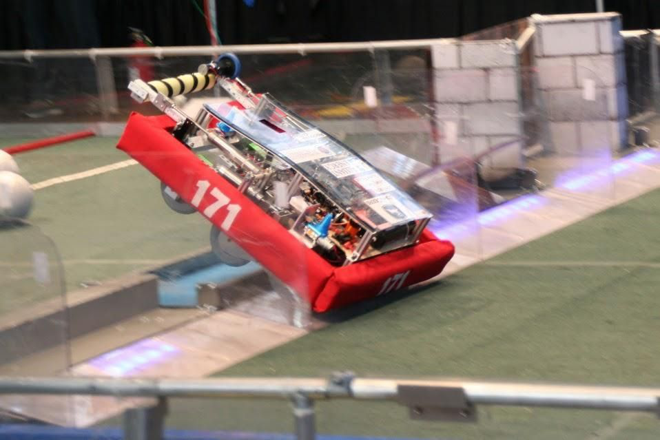
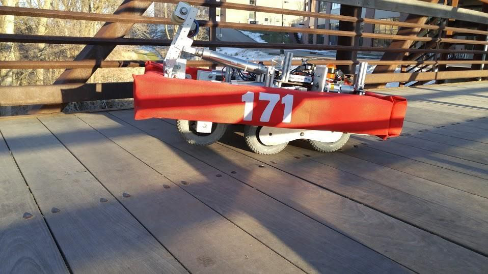
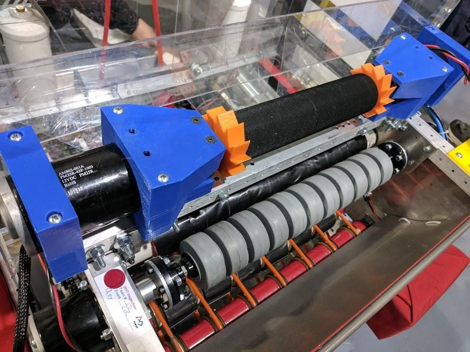
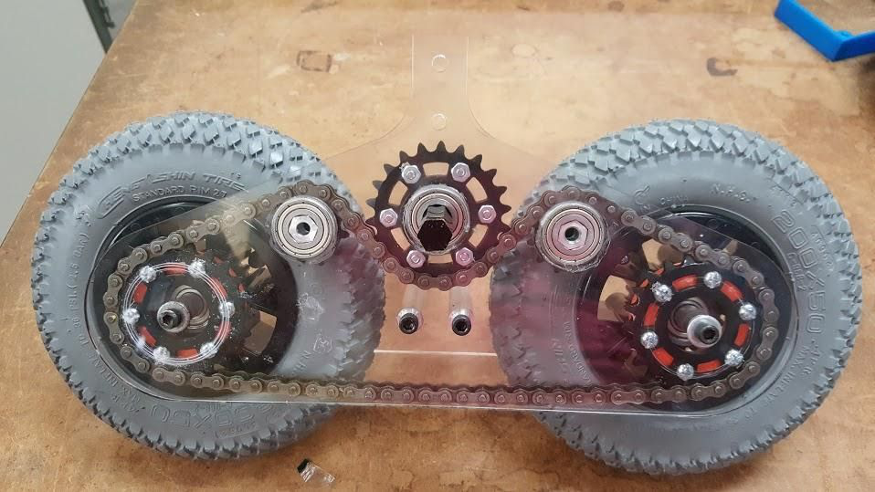
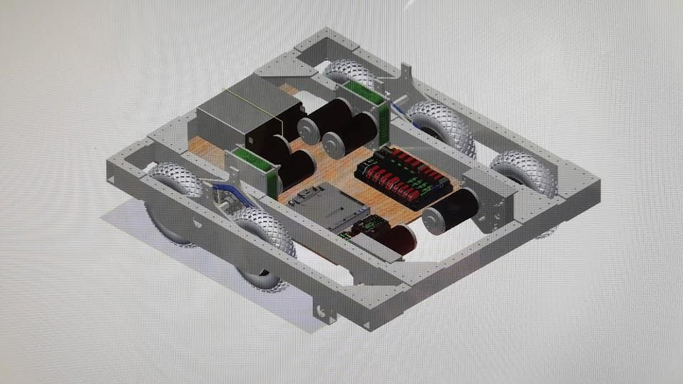

Overview
As a member and eventually president of FIRST Robotics Competition Team 171, I contributed mechanical design work across multiple seasons. Two projects stand out for their technical depth: a high-torque climbing system that lifts the full robot weight in seconds, and a pneumatically actuated rocker-bogie drivetrain inspired by NASA planetary rovers.


Climbing System


As project manager for the climbing subsystem, I was responsible for the full mechanical design from motor selection through final assembly.
- Selected two CIM motors paired with VEX VersaPlanetary gearboxes to achieve a 49:1 gear ratio, providing the torque necessary to lift the robot's full competition weight against gravity in a controlled, repeatable climb.
- Designed 3D-printed motor-mounting brackets using Autodesk Inventor, measured from the robot's main structure for precise fit.
- Engineered custom ratcheting gears to lock the drivetrain in place after the robot reached the target height, preventing it from sliding back down under load — a critical requirement for a held-position end-game score.
- Machined the central spool from a 2.5-inch diameter Delrin cylinder, hex-bored to mate with the motor hex shafts on each side. Wrapped the spool in industrial Velcro to provide reliable grip on the climbing rope without damage to the rope over repeated cycles.
Rocker-Bogie Drivetrain


- Designed a six-wheel rocker-bogie drivetrain adapted from the passive suspension geometry used by NASA Mars rovers, applied to an FRC competition robot to improve obstacle traversal.
- Created the initial 2D plate geometry in CAD, exported as a DXF, and laser-cut prototype bogie plates from acrylic sheet for rapid physical validation of the geometry and chain-sprocket clearances.
- Iterated on chain clearance after the first acrylic prototype revealed interference; revised the model and cut a second acrylic round to confirm the fix before committing to metal.
- Final production bogie plates were waterjet-cut from ¼-inch aluminum plate stock, providing the strength and weight budget needed for the competition robot.
- Integrated single-sided pneumatic cylinders: when un-pressurized, the bogie passively articulates to maintain ground contact across variable terrain (all six wheels always grounded); when activated, the cylinder drives the bogie upward, lifting the robot onto the two bogie wheels to allow the six-wheel drive to climb over taller obstacles that a rigid chassis could not clear.
Team Leadership
Beyond the individual mechanisms, serving as team president taught project management, timeline discipline, and cross-functional coordination across mechanical, electrical, and programming subteams — all under the fixed six-week FRC build season. The competitive pressure of designing, building, and shipping a working robot on a hard deadline became a template for how I approach all engineering work.